flowchart TB
DGIS["DGIS<br/>Egresos y afecciones"] --> ST["STAGING<br/>Muestras de datos de origen"]
INEGI["INEGI<br/>Defunciones registradas"] --> ST
CONAPO["CONAPO<br/>Población e indicadores"] --> ST
ST -. "ETL pendiente: limpieza, homologación e integración" .-> DW["DW<br/>5 dimensiones + 2 tablas de hechos"]
DW -. "Consultas analíticas sobre el esquema" .-> MART["DATAMART<br/>Consultas de P1, P2 y P3"]
9 Arquitectura de tres capas en BigQuery
E1 — Implementación de Staging, Data Warehouse y DataMart
9.1 Objetivo y alcance
La arquitectura de datos del proyecto busca integrar información oficial sobre eventos de salud y características demográficas de los municipios de México. Para ello se consideran tres fuentes institucionales:
- DGIS / Secretaría de Salud: egresos hospitalarios y afecciones asociadas.
- INEGI: estadísticas de defunciones registradas.
- CONAPO: población estimada e indicadores demográficos municipales.
Para los registros de egresos y defunciones se delimitó el periodo 2012–2019. Esta decisión permite enfocar el análisis en los años anteriores a la pandemia de COVID-19, sin incorporar directamente las alteraciones que ocurrieron durante ella. Los productos de CONAPO pueden tener una cobertura temporal más amplia; sus datos deberán alinearse con el periodo elegido cuando se integre la información.
Esta entrega implementa la arquitectura inicial, no un proceso ETL completo: se cargaron muestras de las fuentes en staging y se crearon las estructuras del esquema estrella en dw. Las tablas de hechos y dimensiones todavía no contienen los datos transformados.
9.2 Diseño de la arquitectura
Se utiliza Google BigQuery en el proyecto proyectomineria-511105, con una arquitectura organizada en tres capas: Staging → Data Warehouse → DataMart.
| Capa | Función | Estado para la entrega E1 |
|---|---|---|
| Staging | Almacenar las muestras de los archivos de origen, con separación por fuente y año. | Muestras cargadas; se muestran ejemplos de sus esquemas. |
| DW | Definir un esquema estrella común para integrar información de eventos y población. | Siete tablas creadas mediante sentencias SQL; sin poblar. |
| DataMart | Preparar consultas SQL que respondan las preguntas de E0 con operaciones analíticas. | Implementación y validación del DataMart |
9.2.1 Evidencia de los conjuntos de datos
La Figura Figure 9.1 muestra el proyecto de BigQuery y los conjuntos de datos staging, dw y mart utilizados en esta implementación.
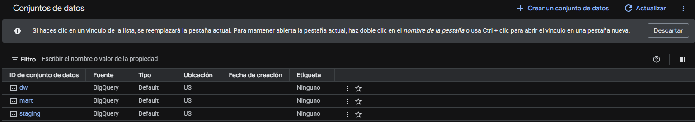
9.3 Implementación de Staging
El dataset staging funciona como zona de recepción de los datos. Se utilizaron muestras de los archivos institucionales para verificar que BigQuery pudiera importar sus columnas y reconocer sus tipos de datos. Las tablas se mantuvieron identificables por fuente y año, sin ejecutar aún la transformación necesaria para integrarlas al esquema estrella.
Las capturas de esta sección corresponden a la pestaña Esquema de BigQuery; permiten observar campos y tipos.
9.3.1 DGIS: archivos de afecciones
Los archivos de afecciones contienen diagnósticos asociados a los registros hospitalarios. En el ejemplo de Afecciones_muestra_12 se distinguen tres columnas:
| Campo observado | Tipo en BigQuery | Descripción para la integración futura |
|---|---|---|
ID |
INTEGER |
Identificador con el que se puede relacionar la afección con el registro correspondiente, sujeto a validación por año. |
AFEC |
STRING |
Código de afección o diagnóstico. |
NUMAFEC |
INTEGER |
Campo numérico de la fuente asociado al registro de afección. Su interpretación precisa debe revisarse en el descriptor. |
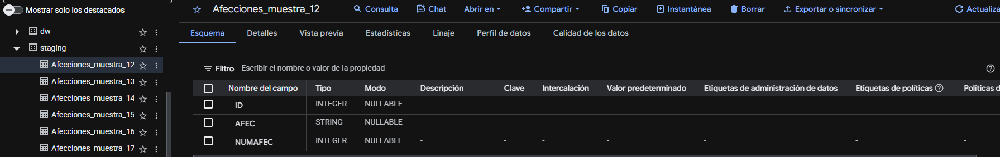
9.3.2 DGIS: egresos hospitalarios
Las muestras resumidas de egresos contienen información sobre el evento hospitalario. En Egreso_muestra_12 se observan, entre otros campos, ID, CLUES, EGRESO, INGRE, DIAS_ESTA, EDAD, SEXO, ENTIDAD y MUNIC.
Estas columnas hacen posible plantear una integración futura por periodo, características demográficas, ubicación y estancia hospitalaria. Sin embargo, no se transformaron ni homologaron los códigos al cargar la muestra.
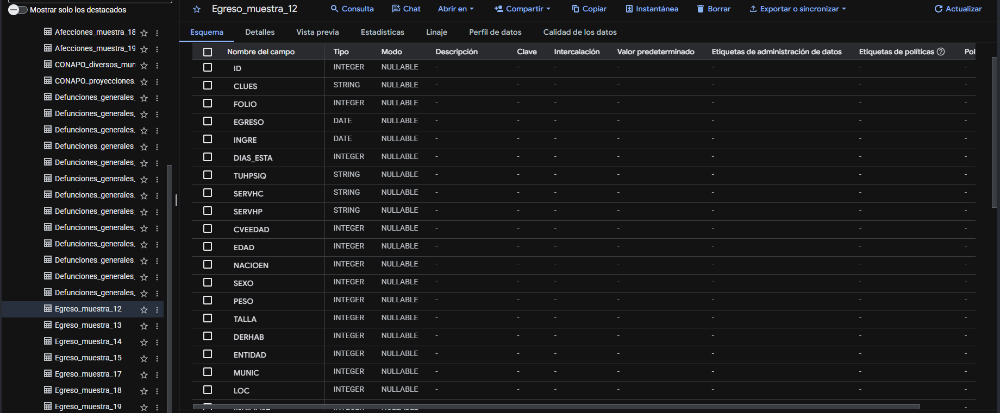
9.3.3 INEGI: defunciones registradas
Los archivos de defunciones permiten identificar el evento de mortalidad, la causa básica y atributos de residencia y tiempo. En la captura de Defunciones_generales_19 se observan campos como ent_resid, mun_resid, causa_def, sexo, edad, anio_ocur y anio_regis, entre otros.
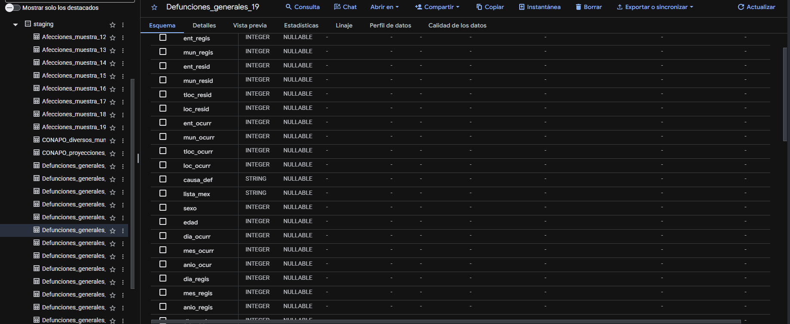
9.3.4 CONAPO: población e indicadores demográficos
Se incorporaron datos de CONAPO relativos a proyecciones de población e indicadores municipales. Esta fuente complementa los eventos observados en DGIS e INEGI, pues permitirá construir medidas relativas a la población, como tasas por cada 100,000 habitantes.
Los archivos de CONAPO procedían de hojas de cálculo y se prepararon en un formato que BigQuery pudiera importar. La compatibilidad de años, grupos de edad, sexo y claves de municipio deberá resolverse en el ETL.
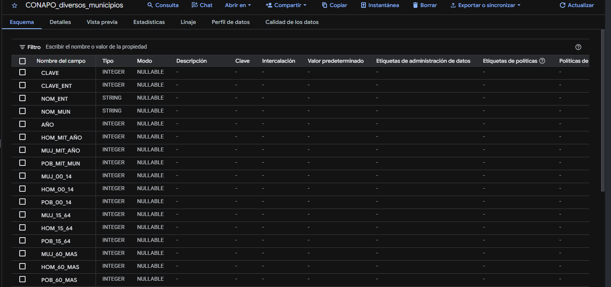
9.3.5 Trabajos de carga e historial
El explorador de trabajos permite consultar el estado de ejecuciones del proyecto, así como identificar trabajos completados y trabajos con error. La siguiente imagen presenta una vista general del historial.
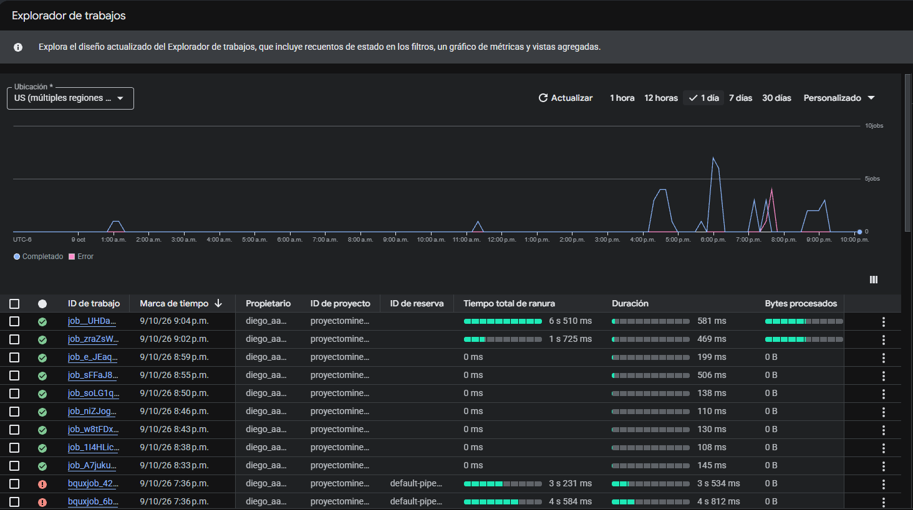
Alcance de esta evidencia: la captura identifica el historial de trabajos, van incluidos cargas de datos y consultas sql. Los picos de 4:00pm a 8:00 pm representan donde se experimentaron más cargas de datos.
9.4 Implementación del Data Warehouse (DW)
En el dataset dw se implementó el esquema estrella propuesto por el equipo, con cinco dimensiones y dos tablas de hechos. Las tablas fueron creadas mediante SQL y se encuentran vacías intencionalmente, pues el proceso de extracción, transformación y carga (ETL) queda fuera del alcance de E1.
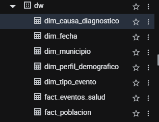
| Tipo | Tabla | Campos visibles | Función principal |
|---|---|---|---|
| Dimensión | dim_fecha |
4 | Año y límites del periodo. |
| Dimensión | dim_municipio |
10 | Identidad geográfica y vigencia territorial. |
| Dimensión | dim_causa_diagnostico |
6 | Categorías y capítulos CIE-10. |
| Dimensión | dim_perfil_demografico |
6 | Sexo y grupos de edad. |
| Dimensión | dim_tipo_evento |
5 | Distinción entre egreso y defunción. |
| Hechos | fact_eventos_salud |
10 | Conteos y medidas de eventos de salud. |
| Hechos | fact_poblacion |
5 | Población estimada por periodo y perfil. |
9.4.1 Evidencia de las cinco dimensiones
Las siguientes capturas muestran directamente los esquemas construidos en BigQuery. En todas las dimensiones se observa la columna correspondiente a la llave primaria (PK).
Contiene fecha_sk, anio, inicio_periodo y fin_periodo. La llave fecha_sk aparece marcada como PK.
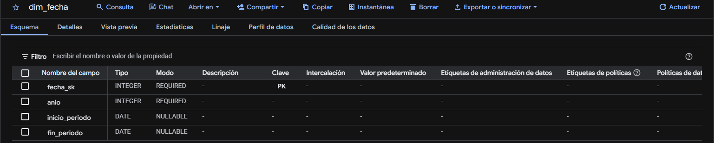
Incluye la llave municipio_sk, los códigos y nombres geográficos, así como version_territorial, vigencia_desde, vigencia_hasta y es_actual, previstos para gestionar el historial territorial.
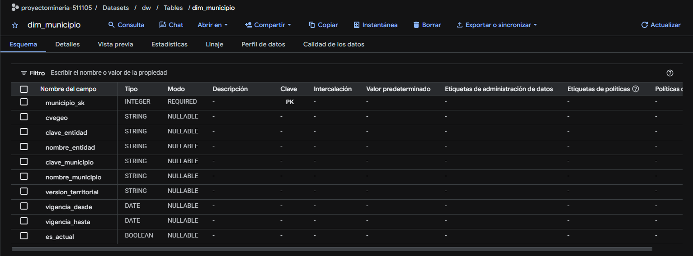
Incluye la llave causa_diagnostico_sk, la categoría CIE-10, su descripción, el capítulo, la descripción del capítulo y la versión del catálogo.
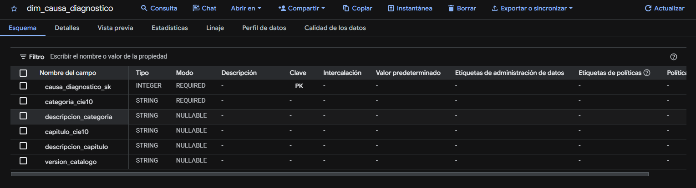
Contiene perfil_demografico_sk, sexo, codigo_grupo_edad, grupo_edad, edad_minima y edad_maxima.
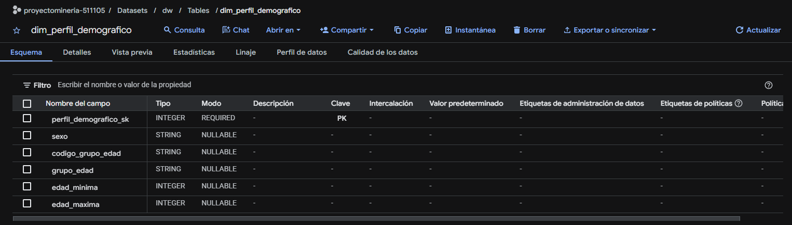
Contiene tipo_evento_sk, codigo_tipo, nombre_tipo, fuente e interpretacion_causa, para distinguir tipos de eventos que tienen significados estadísticos diferentes.
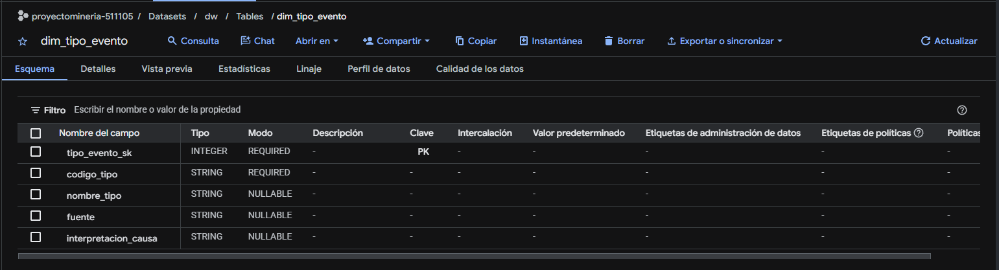
9.4.2 Evidencia de las dos tablas de hechos
Las tablas de hechos incluyen llaves sustitutas propias, referencias a dimensiones y medidas numéricas. Las capturas de BigQuery señalan las llaves primarias como PK y las foráneas como FK.
La tabla contiene una llave primaria (evento_salud_sk), cinco llaves foráneas y cuatro medidas: conteo_eventos, dias_estancia_total, egresos_estancia_valida y egresos_por_defuncion.
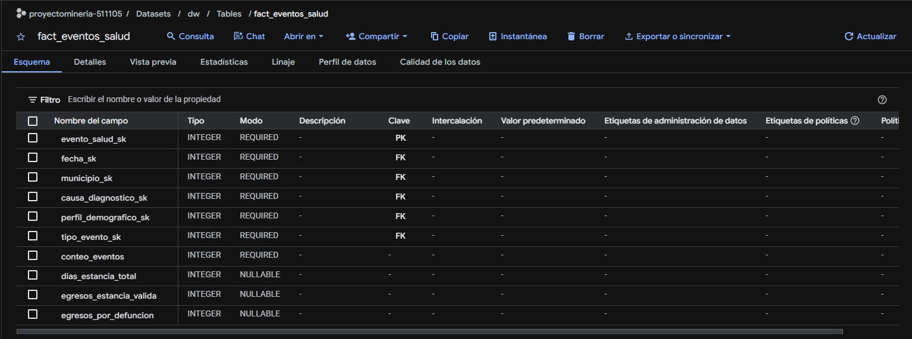
La tabla contiene una llave primaria (poblacion_sk), tres llaves foráneas compartidas con el modelo de eventos y la medida poblacion_estimada.
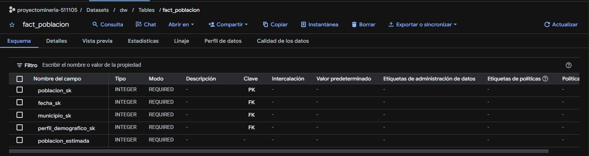
9.4.3 Relaciones y reproducibilidad mediante DDL
Las tablas de hechos comparten las dimensiones dim_fecha, dim_municipio y dim_perfil_demografico. Además, fact_eventos_salud utiliza dim_causa_diagnostico y dim_tipo_evento. Esto permite comparar los eventos con la población al agregar ambas fuentes a un grano compatible, sin atribuir causas de enfermedad a los registros de población.
El diseño se implementó con sentencias CREATE TABLE y declaraciones de llaves primarias y foráneas. En BigQuery, las restricciones declaradas como NOT ENFORCED documentan las relaciones, pero no garantizan automáticamente la unicidad ni la integridad referencial. Dichas verificaciones deberán incorporarse al futuro proceso ETL.
El código de creación se conserva en sql/ddl_dw.sql.
9.5 Capa DataMart
El DataMart se plantea como la capa de consultas analíticas sobre el esquema estrella. Las consultas serán desarrolladas y documentadas por el integrante responsable, utilizando el diseño ya implementado en dw.
| Pregunta de E0 | Análisis previsto |
|---|---|
| P1. ¿Cuáles son las enfermedades y/o padecimientos a nivel municipal? | Analizar por separado los conteos de egresos por diagnóstico y defunciones por causa, agrupados por municipio y año. |
| P2. ¿Qué nos dicen los indicadores acerca de la población del municipio? | Examinar características y distribución poblacional usando CONAPO y sus dimensiones compatibles. |
| P3. ¿Qué relación existe entre los indicadores y las enfermedades? | Relacionar eventos agregados con medidas poblacionales compatibles, distinguiendo asociaciones descriptivas de explicaciones causales. |
La práctica requiere consultas SQL válidas para las preguntas de E0, así como al menos una operación OLAP (por ejemplo, ROLLUP, GROUPING SETS o funciones de ventana).
9.6 Limitaciones y verificaciones pendientes
- Muestras de carga: se utilizaron muestras operativas para comprobar la lectura de archivos y sus esquemas; no deben interpretarse automáticamente como representativas de la población nacional cuando proceden de las primeras filas del archivo.
- Cobertura temporal: el análisis principal de eventos se limitó a 2012–2019. Los periodos cubiertos por CONAPO deben alinearse antes de elaborar indicadores comparables.
- Granos distintos: los egresos, sus afecciones, las defunciones y la población no representan la misma unidad de observación. El ETL deberá resolver las relaciones entre archivos, la agregación de categorías y el riesgo de duplicación.
- Compatibilidad de códigos: deberán homologarse claves municipales, sexo, grupos de edad y categorías CIE-10 antes de integrar las tablas.
9.7 Conclusión
Se implementó la base del almacén de datos en BigQuery mediante la carga de muestras de DGIS, INEGI y CONAPO en staging y la creación de siete tablas estructuradas en el dataset dw. Las capturas del esquema acreditan la existencia de las cinco dimensiones y dos tablas de hechos, con sus atributos y llaves declaradas.
Esta arquitectura permite continuar con la homologación e integración de fuentes durante una entrega posterior.